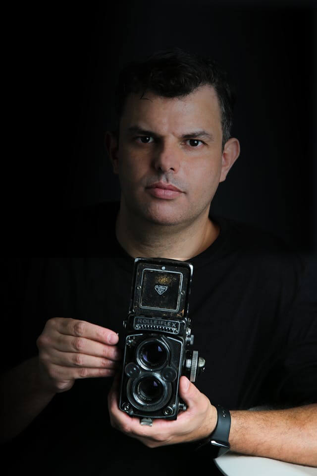
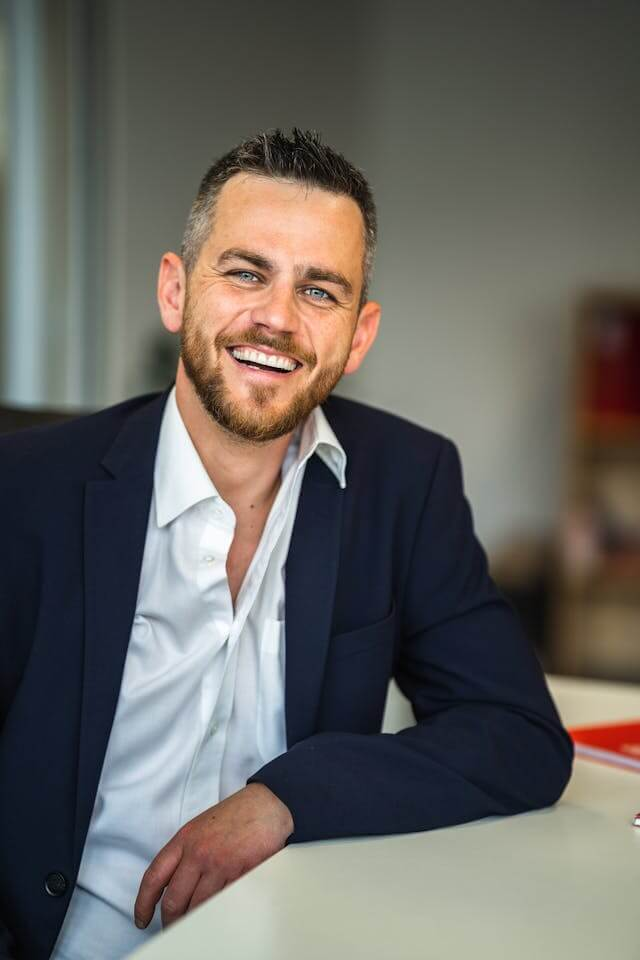
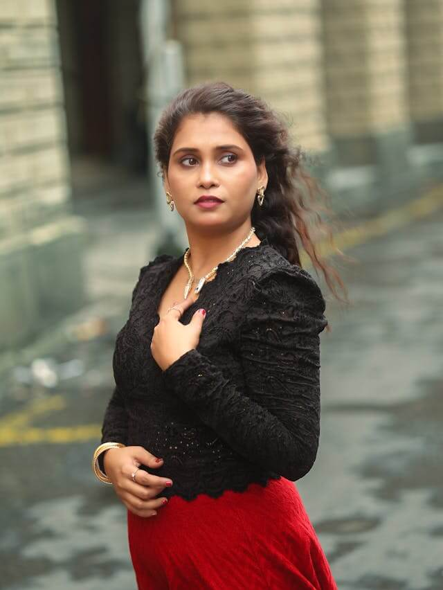

Meet Our Team

Michael Carter Lead Wedding Photographer Michael specializes in capturing love stories.
With over 7 years of experience, he focuses on emotional moments and timeless details that make
every wedding truly unforgettable.

Daniel Reed Business & Branding Photographer Daniel works with professionals and
businesses to create clean, confident visuals. From team headshots to product photography, his work
helps brands look their best across all platforms

Ashley Brooks Fashion & Portrait Photographer Ashley brings a bold and modern look to
every shoot. Whether it's for a model portfolio or a personal portrait session, she captures
striking images full of personality and style.
At Focus Frame, we blend natural moments with artistic composition. We aim for photos that feel
genuine, yet professionally polished — with clean edits, soft tones, and a timeless look.
Whether you're saying “I do,” launching a brand, or stepping in front of the lens for the first time —
Focus Frame is here to make it unforgettable.Contact us to book your session today